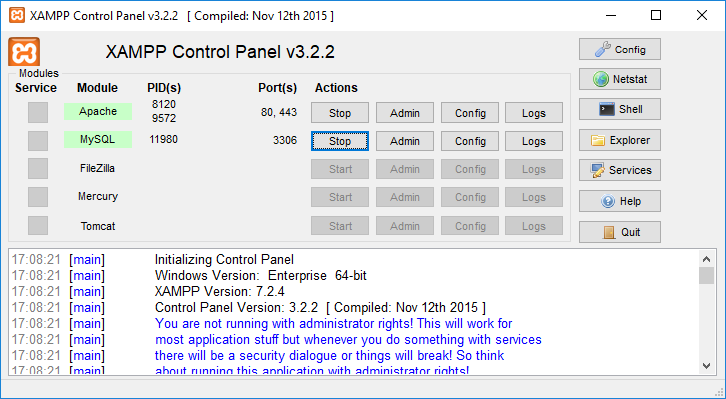
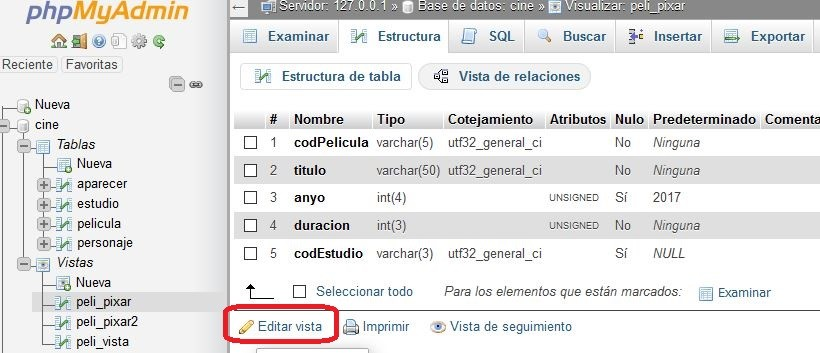

El disseny físic és el procés de produir la descripció de la implementació de la base de dades en memòria secundària: estructures d'emmagatzematge i mètodes d'accés que garanteixin un accés eficient a les dades.
Per dur a terme aquesta etapa, s'ha d'haver decidit quin és el SGBD que s'utilitzarà, ja que l'esquema físic s'adapta a ell.
En el nostre cas utilitzarem MySQL, i com que la seva sintaxi s'adapta en gran mesura a SQL ANSI, les ordres que utilitzarem seran molt similars en la resta de SGBD relacionals.
Quan arribem a aquest punt disposem de:
Mentre que en el disseny lògic s'especifica què es guarda, en el disseny físic s'especifica com es guarda. Per a això, el dissenyador ha de conèixer molt bé tota la funcionalitat del SGBD concret que s'hagi d'utilitzar i també el sistema informàtic sobre el qual aquest treballarà.
El disseny físic no és una etapa aïllada, ja que algunes decisions que es prenguin durant el seu desenvolupament, per exemple per millorar les prestacions, poden provocar una reestructuració de l'esquema lògic.
L'objectiu d'aquesta etapa és produir una descripció de la implementació de la base de dades en memòria secundària. Aquesta descripció inclou les estructures d'emmagatzematge i els mètodes d'accés que s'utilitzaran per aconseguir un accés eficient a les dades.
L'objectiu per tant és:
En aquesta unitat didàctica estudiarem les instruccions o ordres SQL del llenguatge de definició de dades (LDD) que permeten la creació de la nostra base de dades i que inclourà les taules amb els seus camps i índexs.
La primera fase del disseny lògic consisteix a traduir l'esquema lògic global en un esquema que es pugui implementar en el SGBD escollit. Per a això, és necessari conèixer tota la funcionalitat que aquest ofereix. Per exemple, el dissenyador haurà de saber:
SINTAXI
Utilitzarem:
Per poder connectar a la BD de MySQL utilitzarem dues eines:
mysql.exephpMyAdminLes instruccions que executarem funcionen en les dues eines, encara que phpMyAdmin proporciona molta més informació de forma gràfica.
Un cop instal·lat xampp obrirem el programa c:\xampp\xampp-control.exe.
Des d'aquesta eina posarem en marxa el servidor MySQL. A més, si utilitzarem phpMyAdmin haurem d'engegar també el servei web d'Apache.
Obrirem les dues eines alhora i comprovarem que en executar les instruccions en una d'elles, el seu resultat es pot veure en les dues.

Per poder connectar amb mysql.exe obrirem una finestra d'ordres (CMD) i ens desplaçarem fins a la carpeta on tenim l'eina. Per connectar hem d'indicar que connectem amb l'usuari root que no té contrasenya:
C:> cd \xampp\mysql\bin
C:\xampp\mysql\bin> mysql -u root
Per connectar amb l'Aplicació web phpMyAdmin obrirem un navegador i introduirem la URL: http://localhost/phpmyadmin
Per executar instruccions utilitzarem la pestanya SQL.
El primer que hem de fer és crear una base de dades.
MySQL permet disposar de diverses bases de dades en cada instància que estiguem executant. Quan connectem a MySQL podem conèixer les bases de dades que hi ha creades amb la comanda:
SHOW DATABASES;
Per crear una base de dades nova utilitzarem la comanda:
CREATE DATABASE NomBD;
Podem afegir altres paràmetres per si no són els que MySQL té per defecte:
CREATE DATABASE NomBD
DEFAULT CHARACTER SET utf8
DEFAULT COLLATE utf8_general_ci;
En my.ini es pot indicar en una variable l'ENGINE per defecte.
[mysqld]
default-storage-engine = InnoDB
Per defecte ja té aquest valor i podem comprovar-ho a phpMyAdmin a la pestanya Variables.
Per eliminar una base de dades nova utilitzarem la comanda:
DROP DATABASE NomBD;
Per crear una taula en el DF (Disseny Físic) partirem de l'esquema relacional, el diccionari de dades i la documentació de restriccions.
Hem de buscar la informació de restriccions d'alguns camps:
Restriccions per valor
Es defineixen al diccionari de dades. Aquestes restriccions poden estar referides a:
Restriccions d'existència
Es defineixen a l'esquema lògic i es detallen al diccionari de dades. Un camp que és clau externa d'una taula en la relació pot ser opcional (tenir valors nuls) o no.
Restriccions de cardinalitat
Es defineixen a la documentació de restriccions.
Exemple: Cardinalitat màxima definida = Un empleat en una empresa pertany a diversos departaments, però com a màxim a 4.
Restriccions per camps calculats
Es defineixen al diccionari de dades. El valor d'un camp vindrà donat per una fórmula.
Les restriccions per valor i d'existència tindran efecte en la pròpia creació de la taula, però les restriccions de cardinalitat i per camps calculats seran definides per disparadors (triggers) que comprovin o calculin les dades i així, garanteixin la seva integritat.
L'esquema relacional (model lògic) consta d'un conjunt de relacions (taules) i, per a cadascuna d'elles, es té:
Al diccionari de dades es descriuen els atributs i, per a cadascun d'ells, es té:
Abans de començar necessitarem conèixer alguns tipus de dades de MySQL que utilitzarem:
| Tipus de Dada | Valors |
|---|---|
| VARCHAR | Cadena de caràcters |
| INT | Número enter |
| DECIMAL | Nombres decimals |
| DATE | Data |
| DATETIME o TIMESTAMP | Data i hora |
| ENUM | Conjunt de valors |
Referències
Per crear una taula utilitzarem la comanda sql CREATE TABLE reduïda:
CREATE TABLE NomTaula (
Camp1,
Camp2,
...
CampN
);
La sintaxi per definir un camp en la instrucció anterior és:
nom_col TIPO
[NOT NULL | NULL]
[DEFAULT valor_per_defecte]
[AUTO_INCREMENT]
[[PRIMARY] KEY]
[UNIQUE]
[COMMENT 'string']
Exemple 1
Crear una taula anomenada articulos amb els següents camps:
codigo com a cadena de 4 caràctersdescripcion com a cadena de 100 caràctersprecio com un real amb 2 decimals.CREATE TABLE articulos (
codigo VARCHAR(4),
descripcion VARCHAR(100),
precio DECIMAL(10,2)
);
Referències
Partint de l'esquema lògic, crea la taula de proveïdors de la nostra comunitat autònoma següent:
proveedores(cod_prov, localidad, nombre, província)
El diccionari de dades (només amb restriccions de valor) és:
| CAMP | TIPUS | LONGITUD | CARACTERÍSTIQUES |
|---|---|---|---|
| cod_prov | Cadena | 3 | Clau Primària No Nul |
| localitat | Cadena | 100 | Nul |
| nom | Cadena | 100 | No nul Únic Clau Alternativa |
| província | Enumerat | 'Alacant', 'València', 'Castelló' |
Solució:
CREATE TABLE proveedores (
cod_prov VARCHAR(3) PRIMARY KEY,
localidad VARCHAR(100) DEFAULT NULL,
nombre VARCHAR(100) NOT NULL UNIQUE,
provincia ENUM('Alicante','Valencia','Castellón')
);
A XAMPP-MySQL mitjançant l'utilitat mysql.exe executa les instruccions anteriors.
Entra a phpMyAdmin i comprova amb l'assistent visual l'estructura de la taula i crea una altra anomenada proveedores2 amb la mateixa informació amb l'eina gràfica.
Prement a la pestanya Insertar, afegeix registres a la taula proveedores2.
Comprova amb el botó Examinar les dades introduïdes. Comprovaràs que apareix un botó Editar i un altre Borrar que afecta a cada registre.
Amb la comanda DROP TABLE podem eliminar una taula.
Exemple 2
Eliminar una taula
Eliminar la taula proveedores.
DROP TABLE proveedores;
Amb la comanda RENAME TABLE podem canviar el nom d'una taula.
Exemple 3
Canviar el nom a una taula
Canviar el nom de la taula proveedores per distribuidores.
RENAME TABLE proveedores TO distribuidores;
Afegir un camp a una taula existent
Un cop creada una taula, és possible que necessitem afegir, modificar o eliminar algun camp existent. Per a això utilitzarem la comanda ALTER TABLE. Aquesta comanda admet moltes variants.
Exemple 4
Afegir camps a una taula
Afegir el camp descuento, de tipus enter amb 3 dígits i sense acceptar valors nuls, després del camp precio.
ALTER TABLE articulos
ADD COLUMN descuento INT(3) NOT NULL
AFTER precio;
Modificar un camp a una taula existent
Hi ha dues formes de canviar un camp d'una taula:
Amb l'opció MODIFY. Es pot canviar la definició del camp però no el nom.
Perill
La instrucció ALTER TABLE amb l'opció MODIFY fa que es perdin les dades que hi havia a la columna canviada.
Amb l'opció CHANGE. Es pot canviar tant la definició com el nom del camp. Amb aquesta opció es preserven els canvis.
Exemple 5
Modificar la definició dels camps d'una taula
Modificar el camp descuento de manera que ara passi a tenir 4 dígits.
ALTER TABLE articulos
MODIFY COLUMN descuento INT(4) NOT NULL;
Exemple 6
Modificar la definició dels camps d'una taula
Modificar el camp descompte de manera que ara passi a tenir 4 dígits i es digui dto.
ALTER TABLE articulos CHANGE descuento dto INT(4) NOT NULL;
Eliminar un camp d'una taula existent
Amb la instrucció ALTER TABLE i l'opció DROP COLUMN podem eliminar un camp d'una taula.
Exemple 7
Eliminar camps d'una taula
Eliminar el camp dto de la taula articulos.
ALTER TABLE articulos
DROP COLUMN dto;
A XAMPP-MySQL mitjançant l'utilitat mysql.exe executa les instruccions anteriors.
Entra a phpMyAdmin i comprova amb l'assistent visual l'estructura de la taula articulos.
Insereix registres i comprova si pots editar la informació.
Per què en Examinar no apareixen els botons Editar i Borrar?
La comanda INSERT insereix noves files en una taula existent. Hi ha dues maneres d'inserir registres en una taula:
Amb la clàusula VALUES
El format de la comanda és INSERT ... VALUES i insereix files basant-se en els valors especificats explícitament.
Inserir un registre: la sintaxi per inserir un registre és la següent:
INSERT INTO nomTaula (col_name1, col_name2, ...)
VALUES (valor_col1, valor_col2, ... );
Inserir diversos registres: la sintaxi per inserir diversos registres és la següent:
INSERT INTO nomTaula (col_name1, colname2, ...)
VALUES
(valor1_col1, valor1_col2, ... ),
(valor2_col1, valor2_col2, ... ),
...
(valorn_col1, valorn_col2, ... );
Amb sentència SELECT
El format de la comanda és INSERT ... SELECT i insereix files seleccionades d'una altra taula o taules.
La sintaxi per consultar els registres d'una taula és:
SELECT col_name1, col_name2, ...
FROM nomTaula
[WHERE condicio];
La sintaxi per inserir registres des d'una consulta SELECT és la següent:
INSERT INTO nomTaula2 (col_name1, col_name2, ...)
SELECT col_name1, col_name2, ...]
FROM nomTaula1
[WHERE condicio];
✋ Important
Si hi ha camps a la taula que no s'especifiquen a la instruccióINSERT, se li assignarà el valor que s'hagi indicat en la seva creació per defecte (DEFAULT) i en cas contrari seràNULL.
Exemple 1
Inserir valors en taules
Insereix un teclat i un ratolí sense fils a la taula articulos.
INSERT INTO articulos (codigo, descripcion, precio) VALUES
('0001', 'TECLAT SENSE FILS', 10.45),
('0002', 'RATOLÍ SENSE FILS', 7.95);
La sentència UPDATE actualitza columnes de files existents d'una taula amb nous valors.
La clàusula SET indica les columnes a modificar i els valors que han de prendre.
La clàusula WHERE, si es proporciona, especifica quines files han de ser actualitzades. Si no s'especifica, seran actualitzades totes elles.
La sintaxi per actualitzar registres és:
UPDATE nomTaula
SET camp = valor
[WHERE condicio];
A la clàusula SET utilitzarem valor per indicar una cadena, número, data, …
Exemple 1
Actualització de registres
Actualitzar el nom d'una persona identificada pel DNI.
UPDATE personas
SET nombre = 'Joan López'
WHERE dni = '21555666';
Exemple 2
Actualització de registres
Augmentar l'edat d'una persona pel seu aniversari.
UPDATE personas
SET edad = edad + 1
WHERE dni = '21555666';
Exemple 3
Actualització de registres
Augmentar el preu de tots els articles un 5%.
UPDATE articulos
SET precio = precio + precio * 5 / 100;
Perill
Compte amb la clàusula UPDATE ja que si no posem cap condició (clàusula WHERE) s'actualitzaran tots els registres de la taula.
La sentència DELETE elimina les columnes d'una taula que compleixin la condició donada per la clàusula, i retorna el nombre de registres esborrats. Sense clàusula WHERE elimina tots els registres.
La sintaxi per eliminar registres és:
DELETE FROM nomTaula
[WHERE condicio];
Perill
Compte amb la clàusula DELETE ja que si no posem cap condició (clàusula WHERE) s'eliminaran tots els registres de la taula.
Els índexs són estructures que es creen a les Bases de Dades per poder controlar la integritat i realitzar cerques de manera més eficient.
En crear una taula podem crear diversos índexs amb les següents paraules reservades:
Els índexs es poden crear en el moment de la creació de la taula afegint files amb l'opció INDEX després de la definició dels camps.
CREATE TABLE nomTaula (
Camp1,
Camp2,
...
CampN
INDEX [nomIndex] (campI)
);
Es crea un índex sobre el camp I i, opcionalment, li podem donar un nom (millor deixar que el SGBD li doni un nom automàticament).
Exemple 1
Índexs en taules
Creació de la taula articulos i definició d'un índex sobre el camp categoría.
CREATE TABLE articulos (
codigo VARCHAR(4) PRIMARY KEY,
descripcion VARCHAR(100) UNIQUE,
categoria VARCHAR(20),
precio DECIMAL(10,2),
INDEX (categoria)
);
Afegir índexs
Si desitgéssim crear un índex amb valors repetits quan la taula ja existeix, utilitzaríem la comanda següent:
CREATE INDEX nom_index ON nomTaula (col_name1,…);
Si desitgéssim crear un índex amb valors únics quan la taula ja existeix, utilitzaríem la comanda següent:
CREATE UNIQUE INDEX nom_index ON nomTaula (col_name1,…);
Per afegir una clau primària a una taula que no en té, podem fer-ho amb la instrucció ALTER TABLE.
ALTER TABLE nomTaula
ADD PRIMARY KEY (col_name1,…);
Eliminar índexs
Per eliminar un índex haurem de saber el seu nom.
DROP INDEX nomIndex ON nomTaula;
Quan es defineix una clau primària automàticament es crea un índex únic sobre el camp (o camps) que defineixen aquesta clau.
Podem eliminar l'índex associat a la clau primària amb la instrucció ALTER TABLE.
ALTER TABLE nomTaula
DROP PRIMARY KEY;
La necessitat d'identificar un registre de manera única ens obliga a crear una restricció pel camp clau, ja que aquest no podrà ser nul ni tenir valors duplicats.
De fet, no es poden editar les dades d'una taula que no tingui clau primària, encara que sí que es poden inserir registres.
Les claus (primàries i foranes) poden ser:
Definir la clau primària en el moment de crear la taula
Aquesta es pot declarar a la mateixa fila en què es defineix un camp (només és vàlid si el camp és simple) o després de la definició dels camps en una línia independent (vàlid per a tot tipus de claus, simples o compostes).
Exemple 1
Restriccions camp clau taules
Crear la taula articulos i definir el camp codigo com a clau primària.
-- La clau primària es defineix al costat del camp
CREATE TABLE articulos (
codigo VARCHAR(4) PRIMARY KEY,
descripcion VARCHAR(100),
precio DECIMAL(10,2)
);
-- La clau primària es defineix al final en una fila independent
CREATE TABLE articulos (
codigo VARCHAR(4),
descripcion VARCHAR(100),
precio DECIMAL(10,2),
PRIMARY KEY (codigo)
);
Eliminar la clau primària
Es pot dur a terme amb la instrucció ALTER TABLE combinada amb l'opció DROP.
Exemple 2
Restriccions camp clau taules
Eliminar la clau primària de la taula articulos.
ALTER TABLE articulos DROP PRIMARY KEY;
Afegir la clau primària a una taula existent
Es pot afegir la clau primària amb posterioritat a la creació de la taula amb la instrucció ALTER TABLE combinada amb l'opció ADD.
Exemple 3
Restriccions camp clau taules
Afegir la clau primària definida sobre el camp codigo a la taula articulos.
ALTER TABLE articulos ADD PRIMARY KEY(codigo);
Claus compostes
Ja hem dit anteriorment que una clau és composta si està formada per la concatenació de diversos camps.
Exemple 4
Restriccions camp clau taules
Crear la taula revision_itv on es guardaran les revisions d'ITV dels vehicles. La clau primària està formada per la matricula i la fecha de matriculació del vehicle.
CREATE TABLE revision_itv (
matricula VARCHAR(10),
fecha DATE,
estado VARCHAR(100),
PRIMARY KEY (matricula, fecha)
);
Es podria haver creat la taula en primer lloc i a continuació afegir la clau primària.
Exemple 4b
Restriccions camp clau taules
-- Crear la taula
CREATE TABLE revision_itv (
matricula VARCHAR(10),
fecha DATE,
estado VARCHAR(100)
);
-- Afegir la clau primària
ALTER TABLE revision_itv ADD PRIMARY KEY (matricula, fecha);
Quan un camp no pot tenir valors nuls, diem que és un camp obligatori. En el nostre exemple indicarem la descripció com a camp obligatori perquè cap article tingui la descripció buida.
Definir camp obligatori en crear la taula
Un camp obligatori es defineix amb l'opció NOT NULL al costat del camp.
Exemple 5
Restriccions camp obligatori
Crear la taula articulos i definir el camp descripcion com a obligatori.
CREATE TABLE articulos (
codigo VARCHAR(4) PRIMARY KEY,
descripcion VARCHAR(100) NOT NULL,
precio DECIMAL(10,2)
);
Eliminar la restricció de camp obligatori
Per eliminar la restricció de camp obligatori utilitzem la instrucció ALTER TABLE amb l'opció CHANGE.
Exemple 6
Restriccions camp obligatori
Eliminar la restricció de camp obligatori del camp descripcion de la taula articulos.
ALTER TABLE articulos CHANGE descripcion VARCHAR(100) NULL;
Afegir la restricció de camp obligatori en una taula que ja existeix
També es fa amb la instrucció ALTER TABLE amb l'opció CHANGE.
Exemple 7
Restriccions camp obligatori
Afegir la restricció de camp obligatori del camp descripcion de la taula articulos.
ALTER TABLE articulos CHANGE descripcion descripcion VARCHAR(100) NOT NULL;
Quan un camp no pot tenir valors repetits, diem que és un camp únic. Quan es defineix un camp únic automàticament es crea un índex sobre aquest amb valors únics.
Definir un camp únic en crear la taula
Es pot fer amb l'opció UNIQUE al costat del camp sobre el qual es defineix.
Exemple 8
Restriccions camp únic
Definir una restricció única sobre el camp descripcion en el moment de la creació de la taula articulos.
CREATE TABLE articulos (
codigo VARCHAR(4) PRIMARY KEY,
descripcion VARCHAR(100) NOT NULL UNIQUE,
precio DECIMAL(10,2)
);
Eliminar la restricció de camp únic
Es duu a terme amb la instrucció ALTER TABLE combinada amb l'opció DROP. La restricció s'elimina esborrant l'índex associat que es crea quan es defineix aquesta.
Exemple 9
Restriccions camp únic
Eliminar la restricció única definida sobre el camp descripcion de la taula articulos.
ALTER TABLE articulos DROP INDEX descripcion;
Afegir la restricció de camp únic en una taula que ja existeix
Es duu a terme amb la instrucció ALTER TABLE combinada amb l'opció ADD.
Exemple 10
Restriccions camp únic
Afegir una restricció única sobre el camp descripcion de la taula articulos.
ALTER TABLE articulos ADD UNIQUE(descripcion);
Com ja hem vist en els esquemes lògics relacionals obtinguts dels esquemes conceptuals, existeixen claus externes que contenen valors de la clau primària d'una altra taula amb la qual es relacionen.
En un esquema que té localitats i províncies, on indiquem en cada localitat de quina província és, podríem tenir les següents taules:
CREATE TABLE provincias (
cod_prov INT(2) PRIMARY KEY,
provincia VARCHAR(40)
);
CREATE TABLE localidades (
cod_loc INT(5) PRIMARY KEY,
localidad VARCHAR(100),
cod_provincia INT(2)
);
Crear clau externa en crear la taula
La clau externa es pot definir en el moment de crear la taula declarant-la després de la definició dels camps de la taula.
Exemple 11
Restriccions camp per clau externa
Crear la taula localidades definint una clau forana sobre el camp cod_provincia que faci referència a la taula provincias.
CREATE TABLE localidades (
cod_loc INT(5) PRIMARY KEY,
localidad VARCHAR(100),
cod_provincia INT(2),
FOREIGN KEY (cod_província) REFERENCES provincias (cod_prov)
);
Quan creem una relació, i per tant una clau externa, es creen dos elements a la BD:
localidades_ibfk1.Si volem donar-li un nom nosaltres utilitzarem la clàusula CONSTRAINT:
Exemple 12
Restriccions camp per clau externa
Exemple equivalent a l'anterior en què s'ha donat el nom provincias_cod_prov a la restricció de clau externa.
CREATE TABLE localidades (
cod_loc INT(5) PRIMARY KEY,
localidad VARCHAR(100),
cod_provincia INT(2),
CONSTRAINT provincias_cod_prov FOREIGN KEY (cod_provincia) REFERENCES provincias (cod_prov)
);
D'aquesta manera s'utilitzarà el valor de CONSTRAINT tant per a l'índex com per a la relació.
Eliminar la restricció de clau externa
S'utilitza la instrucció ALTER TABLE en combinació amb l'opció DROP per a aquest propòsit. Si hem definit la restricció amb una clàusula CONSTRAINT l'utilitzarem.
Exemple 13
Restriccions camp per clau externa
Eliminar la restricció de clau externa de nom provincias_cod_prov.
ALTER TABLE localidades DROP FOREIGN KEY provincias_cod_prov;
En cas de no haver utilitzat la clàusula CONSTRAINT en la definició de la restricció llavors l'eliminarem indicant el nom que se li ha donat per defecte.
Exemple 14
Restriccions camp per clau externa
Eliminar la restricció de clau externa definida anònimament en la taula localidades. Sabem que només hi ha aquesta restricció de clau externa.
ALTER TABLE localidades DROP FOREIGN KEY localidades_ibkf_1;
També haurem de decidir si desitgem eliminar l'índex existent o no. En cas de desitjar eliminar-lo haurem d'indicar-ho amb la instrucció corresponent segons hàgim indicat CONSTRAINT o no. Si no hem utilitzat l'opció CONSTRAINT llavors l'índex té el mateix nom que el camp sobre el qual es defineix.
Exemple 15
Restriccions camp per clau externa
Eliminar l'índex associat a la clau externa definida en la taula localidades sobre el camp cod_província.
-- Se li havia donat un nom a l'índex.
ALTER TABLE localidades DROP INDEX provincias_cod_prov;
-- No se li havia donat un nom a l'índex.
ALTER TABLE localidades DROP INDEX cod_provincia;
Afegir la restricció de clau externa a una taula existent
S'utilitza la instrucció ALTER TABLE en combinació amb l'opció ADD per a aquest propòsit.
Exemple 16
Restriccions camp per clau externa
Afegir una clau externa sobre el camp cod_provincia de la taula localidades que faci referència a la taula provincias.
-- Sense clàusula CONSTRAINT
ALTER TABLE localidades ADD
FOREIGN KEY (cod_provincia) REFERENCES provincias (cod_prov);
-- Amb clàusula CONSTRAINT
ALTER TABLE localidades ADD CONSTRAINT provincias_cod_prov
FOREIGN KEY (cod_provincia) REFERENCES provincias (cod_prov);
Una de les accions més importants per mantenir la integritat en una base de dades és identificar correctament l'acció a realitzar quan eliminem o actualitzem el valor de la clau externa d'un registre.
En el cas de buidar el camp localidades.cod_provincia podem dur a terme diverses accions:
RESTRICT: És el valor per defecte. El servidor MySQL rebutjarà l'operació d'eliminació o actualització per a la taula pare (províncies) si hi ha un valor de clau externa relacionat en la taula referenciada (localitats), és a dir, no es pot a províncies eliminar un registre o canviar la seva clau, si existeixen localitats d'aquesta província.
NO ACTION: Pertany al SQL estàndard. En MySQL és equivalent a RESTRICT. Alguns sistemes de base de dades tenen verificacions diferides, i NO ACTION és un control diferit. En MySQL, les restriccions de clau externa es verifiquen immediatament, per la qual cosa NO ACTION és el mateix que RESTRICT.
SET NULL: Si en la taula pare (províncies) s'elimina un registre o s'actualitza la seva clau, si hi ha algun valor de clau externa relacionat en la taula referenciada (localitats) s'actualitzarà el valor a NULL.
Si especifiqueu una acció SET NULL, assegureu-vos que no heu declarat les columnes en la taula secundària com a NOT NULL.
CASCADE:
Per indicar aquestes accions afegirem a la sentència FOREIGN KEY alguna de les següents clàusules:
ON DELETE RESTRICTON DELETE SET NULLON DELETE CASCADEON UPDATE RESTRICTON UPDATE SET NULLON UPDATE CASCADEExemple 17
Restriccions per esborrat/actualització de clau externa
Definir una instrucció sobre la taula localidades de manera que en eliminar una província s'eliminin totes les localitats d'aquesta província i que no permeti canviar l'identificador de província si té localitats.
ALTER TABLE localidades ADD CONSTRAINT provincias_cod_prov
FOREIGN KEY (cod_provincia) REFERENCES provincias (cod_prov)
ON DELETE CASCADE
ON UPDATE RESTRICT;
Enters positius
En definir un camp podem indicar que només s'acceptaran números positius amb la paraula reservada UNSIGNED i assignar-li un valor per defecte determinat amb la paraula reservada DEFAULT si quan s'insereix un registre no es proporciona un valor per a aquest camp.
Exemple 18
Altres restriccions i valors per defecte
En el moment de la creació de la taula articulos, definiu el camp precio perquè no pugui acceptar valors negatius i que per defecte valgui 0.
CREATE TABLE articulos (
codigo VARCHAR(3) PRIMARY KEY,
descripcion VARCHAR(100) NOT NULL,
precio DECIMAL(10,2) UNSIGNED DEFAULT 0
);
Data d'alta i de modificació
Quan desitgem tenir en una taula la data d'alta i modificació podem utilitzar camps que es creïn i actualitzin automàticament.
Amb DEFAULT CURRENT_TIMESTAMP un camp obtindrà per defecte el valor de la data i hora del sistema.
Amb ON UPDATE CURRENT_TIMESTAMP un camp actualitzarà el valor amb la data i hora del sistema cada vegada que s'actualitzi el registre.
Exemple 19
Altres restriccions i valors per defecte
En el moment de la creació de la taula ejemplo, definiu el camp fecha_modificacion perquè s'actualitzi amb el valor de l'instant en què es dugui a terme l'actualització d'un registre i perquè el camp fecha_alta s'ajusti a l'instant actual quan s'insereixi un registre.
CREATE TABLE ejemplo (
codigo VARCHAR(2) PRIMARY KEY,
fecha_alta DATETIME DEFAULT CURRENT_TIMESTAMP,
fecha_modificacion DATETIME ON UPDATE CURRENT_TIMESTAMP
);
Omplir amb zeros
L'ompliment amb zeros a l'esquerra es duu a terme sobre camps de tipus INT. Per a això utilitzem l'opció ZEROFILL.
Exemple 20
Altres restriccions i valors per defecte
En el moment de la creació de la taula ejemplo definiu el camp codigo perquè s'ompli amb zeros a l'esquerra.
CREATE TABLE ejemplo (
codigo INT(4) ZEROFILL PRIMARY KEY,
descripcion VARCHAR(50) NOT NULL
);
/* El valor del codi 1 s'inserirà omplint amb zeros a l'esquerra
per obtenir el valor amb 4 dígits. */
INSERT INTO ejemplo (codigo, descripcion) VALUES ('1','registre u');
Clau primària automàtica - Autoincrement
Quan tenim una entitat on emmagatzemem registres però en l'esquema conceptual del model entitat-relació no teníem una clau primària, hem d'afegir un atribut codi (o qualsevol altre nom) per disposar d'una clau primària.
El normal és que aquesta informació no la demanem a l'usuari, ja que en el sistema a analitzar no apareixia aquesta informació, per la qual cosa se sol deixar que sigui el sistema el que generi aquest codi automàticament amb la paraula reservada AUTO_INCREMENT.
Exemple 22
Altres restriccions i valors per defecte
Crear la taula ejemplo de manera que la clau primària sigui un camp autoincrementat.
CREATE TABLE ejemplo (
codigo INT(4) AUTO_INCREMENT PRIMARY KEY,
descripcion VARCHAR(50) NOT NULL
);
-- No especifiquem el camp codi ja que aquest és autoincrementat
INSERT INTO ejemplo(descripcion) VALUES ('registre u');
En phpMyAdmin, seleccionant la taula i després prement a la pestanya operacions, podem veure i canviar el valor següent de AUTO_INCREMENT.
Avís
No proporcionar mai valors dels camps autoincrementats en les instruccions d'inserció ja que això ens pot conduir a errors difícils de tractar.
Camps calculats
Una solució per als camps calculats és no crear-los en les taules sinó en les consultes amb funcions de MySQL.
Aquest tipus de càlculs i funcions els veurem a la següent unitat didàctica on treballarem el llenguatge de consultes SQL amb les instruccions SELECT.
De totes maneres, per a aquells que desitgin anar practicant, podeu consultar les funcions disponibles a:
https://dev.mysql.com/doc/refman/8.0/en/func-op-summary-ref.html
Filtre de valors vàlids
En el llenguatge de SQL existeix la paraula reservada CHECK per indicar la condició que ha de complir un valor d'un camp per ser vàlid.
Exemple 23
Restriccions avançades
Crear la taula notas de manera que la nota de l'alumne estigui entre 0 i 10.
CREATE TABLE notes (
nia VARCHAR(8),
asignatura VARCHAR(15),
nota DECIMAL (6,2),
CONSTRAINT check_nota CHECK ( (nota >= 0) AND (nota <= 10) )
);
Transformacions abans de gravar
Igual que en l'apartat anterior CHECK ens permet realitzar aquests canvis.
Exemple 24
Restriccions avançades
Desitgem que en el camp asignatura s'emmagatzemin els valors en majúscula independentment de com els proporcioni l'usuari. Per a això utilitzarem la funció UPPER() dins d'una restricció CHECK.
CREATE TABLE notas (
nia VARCHAR(8),
asignatura VARCHAR(15),
nota DECIMAL (6,2),
CONSTRAINT check_asignatura CHECK ( asignatura = UPPER(asignatura) )
);
Encara que aquesta definició no dóna cap error en MySQL, desafortunadament aquesta funcionalitat no està implementada a dia d'avui. El problema es pot solucionar definint un procediment especial anomenat trigger o disparador. En una unitat didàctica posterior es tractarà en profunditat el treball amb triggers.
En qualsevol cas, a títol informatiu, es mostrarà el codi d'aquest procediment que en el nostre cas tindrà la funció d'interceptar el valor de l'assignatura que es vol inserir i substituirà el valor proporcionat pel mateix però passat a majúscules.
Annex exemple 24
Restriccions avançades
Creació del trigger que soluciona el pas a majúscules del nom de les assignatures.
/* Crear el disparador */
DELIMITER //
CREATE TRIGGER notes_before_insert BEFORE INSERT ON notas
BEGIN
FOR EACH ROW BEGIN
SET NEW.asignatura = UPPER(NEW.asignatura);
END;
END //
DELIMITER ;
Per eliminar un TRIGGER disposem de la instrucció DROP.
Annex exemple 24b
Restriccions avançades
Eliminar el trigger creat a l'exemple anterior.
DROP TRIGGER notas_before_insert;
Hi ha la possibilitat de crear taules a partir de consultes d'altres taules.
La sintaxi és molt senzilla, ja que si tenim una consulta del tipus:
SELECT camp1, camp2
FROM nomtaula
WHERE condició;
Podríem obtenir una taula amb la següent instrucció SQL:
CREATE TABLE novataula
SELECT camp1, camp2 FROM nomtaula WHERE condició;
Però això sí, la crea sense clau primària, ni restriccions ni índexs.
Exemple 1
Taules a partir de consultes
Crear un duplicat de la taula provincias de nom provincias2.
CREATE TABLE provincias2
SELECT * FROM provincias;
Una vista és una consulta que es presenta com una taula (virtual) a partir d'un conjunt de taules en una base de dades relacional.
Les vistes tenen la mateixa estructura que una taula: files i columnes. L'única diferència és que només s'emmagatzema d'elles la definició, no les dades. Les dades que es recuperen mitjançant una consulta a una vista es presentaran igual que les d'una taula. De fet, si no se sap que s'està treballant amb una vista, res fa suposar que és així. Igual que succeeix amb una taula, es poden inserir, actualitzar, esborrar i seleccionar dades en una vista. Encara que sempre és possible seleccionar dades d'una vista, en algunes condicions existeixen restriccions per realitzar la resta de les operacions sobre vistes.
Una vista es especifica a través d'una expressió de consulta (una sentència SELECT) que la calcula i que pot realitzar-se sobre una o més taules. Sobre un conjunt de taules relacionals es pot treballar amb un nombre qualsevol de vistes.
La majoria dels SGBD suporten la creació i manipulació de vistes. La sintaxi és molt senzilla, ja que si tenim una consulta de tipus:
SELECT camp1, camp2
FROM nomtaula
WHERE condició;
Podríem obtenir una vista amb la sentència CREATE VIEW de la següent manera:
CREATE VIEW novaVista AS
SELECT camp1, camp2
FROM nomtaula
[WHERE condició];
Exemple 1
Vistes
Crear una vista de nom personas1 a partir de la taula personas de manera que només contingui les províncies de codi igual a 1.
CREATE VIEW personas1 AS
SELECT * FROM personas WHERE cod_provincia = 1;
Quan creem una vista d'una taula amb restriccions de tipus CHECK, per defecte, les insercions a la vista no tindran en compte les restriccions. Això es pot solucionar afegint la clàusula WITH CHECK OPTION després de la clàusula WHERE.
CREATE VIEW novataula AS
SELECT camp1, camp2
FROM nomtaula
WHERE condició
WITH CHECK OPTION;
També es pot crear una vista amb restriccions CHECK encara que la taula sobre la qual es realitza no les tingui.
Exemple 2
Vistes
Tenim una taula denominada notas_data
CREATE TABLE notas_data (
nia VARCHAR(8),
asignatura VARCHAR(15),
nota DECIMAL (6,2)
);
Crear una vista sobre aquesta taula amb la restricció de valor de nota entre 0 i 10.
CREATE VIEW notas AS
SELECT nia, asignatura, nota FROM notas_data WHERE (nota >= 0) and (nota <= 10)
WITH CHECK OPTION;
El següent exemple aclareix aquest concepte.
Exemple 3
Suposem que tenim una taula denominada notas_data
CREATE TABLE notas (
nia VARCHAR(8),
asignatura VARCHAR(15),
nota1 DECIMAL (6,2),
nota2 DECIMAL (6,2)
);
Crear una vista que tingui el camp asignatura en majúscules i un camp calculat addicional que sigui la nota mitjana (promedio) de nota1 i nota2 amb una precisió d'un decimal.
CREATE VIEW notas_view AS
SELECT nia, UPPER(asignatura) as asignatura_upper, nota1, nota2, round((nota1+nota2)/2, 1) as promedio FROM notas;
Aquest sistema ens obligaria a editar les dades a la taula notas però visualitzar el resultat amb la vista notas_view.
Un cop hem creat una vista, podrem editar-la si ho desitgem. Per a això, si utilitzem phpMyAdmin, premerem sobre la vista, després a Estructura i posteriorment a Editar vista:
